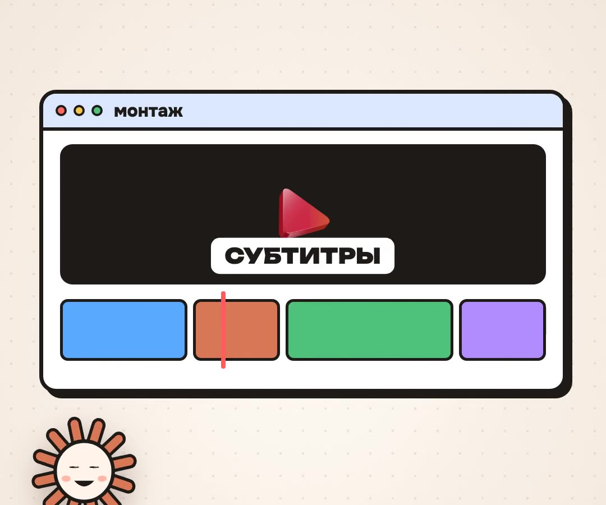

1
Remotion — Claude монтирует ролики
Набор навыков от создателей Remotion. Claude собирает видео кодом: субтитры по словам, анимация, переходы, даже 3D. Ролик, по которому ты сюда пришёл, собран именно так.
Руками: npx skills add remotion-dev/skills (нужен Node.js).
Скопируй и отправь в Claude Code
Поставь мне навыки Remotion для Claude Code: выполни npx skills add remotion-dev/skills. Если нет Node.js — сначала поставь его. Потом сделай пробный ролик на 10 секунд: белый фон и моё имя крупно с анимацией появления.